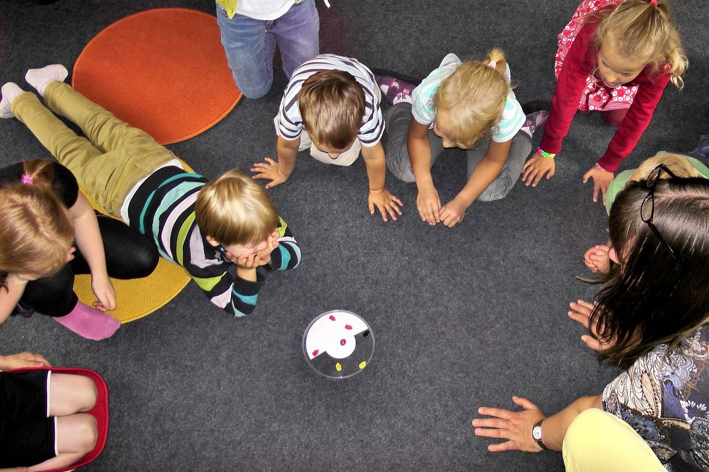

A lo largo de la historia han existido instituciones donde niños y niñas asisten con el fin de recibir conocimiento; por la antigüedad de su creación, la escuela fue construida de forma similar a la iglesia, las escuelas militares donde hay una persona al frente que imparte todo el conocimiento sin ser refutado por ninguno de los presentes, es decir que nadie podía opinar al respecto.
Debido a esta rigidez educativa, nace una iniciativa con educadores pensantes en métodos innovadores, donde los estudiantes tienen la libertad de opinar, expresarse.
Se utiliza la metodología DESARROLLO Mixta, por que permite realizar el tipo de investigación de manera cualitativa y cuantitativamente, ya que brinda la información suficiente para dicha investigación.
Conociendo los riesgos de las redes sociales, el proyecto evidencia las problemáticas sociales que generan las nuevas tecnologías, tales como: afectar su autoestima, alterar sus horarios de sueño, generar depresión, ansiedad, bajo rendimiento académico, etc. No obstante, son beneficiosas, para el uso académico, la comunicación entre familiares y amigos lejanos, aprender nuevos idiomas y crear su propio emprendimiento.